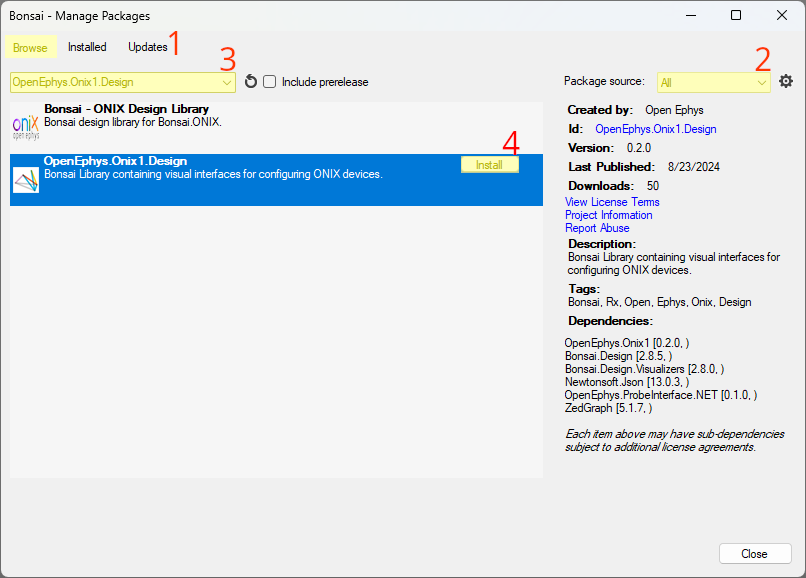
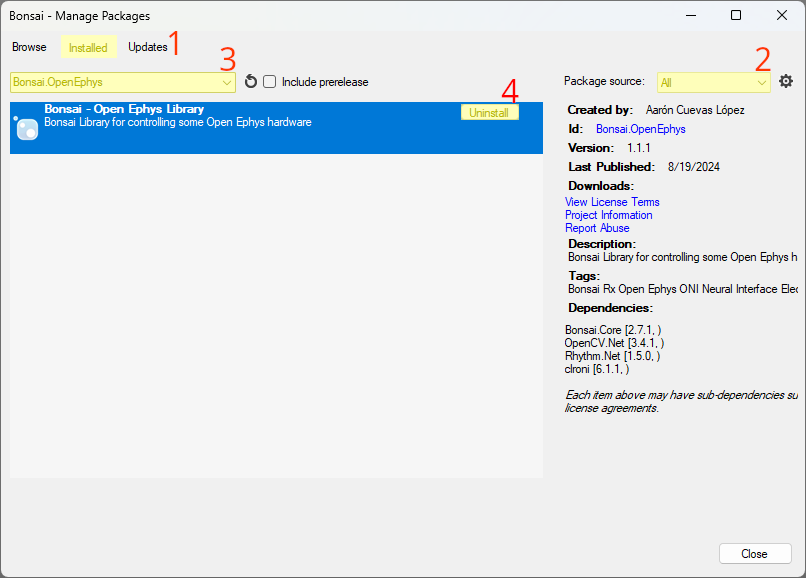

Installation
Install Bonsai
To download Bonsai, select between the portable download and the installer download here.
- The Portable download (.zip) installs a sandboxed version of Bonsai. Portable environments enable users to switch between different environments to prevent package conflicts or confusion between similar packages.
- To install from the Portable download, extract the downloaded file. You can start the portable Bonsai by running the
Bonsai.exethat is inside the extracted folder.
- To install from the Portable download, extract the downloaded file. You can start the portable Bonsai by running the
- The Installer download (.exe) installs Bonsai and all its dependencies globally.
- To install from the Installer download, run the downloaded
Bonsai-X.X.X.exefile and agree to the involved licenses. You can start the globally installed Bonsai by launching it from theBonsai Setupwindow after installing or searching for it in your OS's search function, for example.
- To install from the Installer download, run the downloaded
Tip
When using multiple environments, create and name shortcuts such that different Bonsai environments are easier to find and distinguish.
Open Bonsai Package Manager
The Bonsai package manager can be accessed from Bonsai's landing window or its workflow editor:
 or
or 
Install Packages in Bonsai
The following packages required to run the workflows in this documentation are:
Bonsai.StarterPack: the "standard library" for Bonsai that contains tools that are used in almost every workflow.OpenEphys.Commutator: Bonsai package for controlling Open Ephys commutators.OpenEphys.Onix1.Design: An extension of theOpenEphys.Onix1library that includes graphical user interfaces (GUIs).
Tip
Additional packages will allow you to extend the functionality of ONIX hardware beyond the scope of this documentation. There are packages that allow ONIX be combined with visual psychophysics, markerless pose estimation, HARP behavioral devices, and much more.
OpenEphys.Onix1
To install the OpenEphys.Onix1 package open the package manager and:
- Click the
Browsetab. - Set
Package sourcetoAllorNuGet. - Search
OpenEphys.Onix1. - Click
Install. - Click
I Acceptwhen the license agreement window appears.

OpenEphys.Onix1.Design
To install the OpenEphys.Onix1.Design package open the package manager and:
- Click the
Browsetab. - Set
Package sourcetoAllorNuGet. - Search
OpenEphys.Onix1.Design. - Click
Install. - Click
I Acceptwhen the license agreement window appears.

Bonsai.StarterPack
To install the Bonsai.StarterPack package open the package manager and:
- Click the
Browsetab. - Set
Package sourcetoBonsai Packages. - Search for
Bonsai.StarterPack. - Click
Install.

OpenEphys.Commutator
To install the OpenEphys.Commutator package open the package manager and:
- Click the
Browsetab. - Set
Package sourcetoAllorNuGet. - Search for
OpenEphys.Commutator. - Click
Install.

Update Packages in Bonsai
It is good practice to periodically check for package updates. To do this, open the package manager and:
- Click the
Updatetab. - Set
Package sourcetoAll. - Leave the search bar blank if you want to check for updates for all packages.
Alternatively, if you want to check for an update for a particular package, you may type that package's name in the search bar to expedite the update retrieval process. - Click
Update Allif you want to perform all available updates.
Alternatively, click on a package and clickUpdateif you want to perform a subset of the available updates.

Uninstall Packages in Bonsai
Sometimes it is helpful to uninstall packages. Open the package manager and:
- Click the
Installedtab. - Set
Package sourcetoAll. - Leave the search bar blank if you want to see all installed packages.
Alternatively, if you want to uninstall a particular package, you may type that package's name in the search bar. - Click a package and click
Uninstallto uninstall a packages.

Next Steps
Now that Bonsai has been installed and configured, it is time to start constructing a workflow to capture data from your ONIX system. The following sections give a high-level understanding of how Bonsai is organized, and some of the ONIX-specific concepts that will be useful for learning how to work with the operators. If you are familiar with Bonsai, you might want to skip to the Tutorials section.